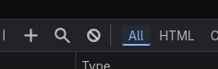
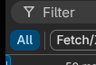

How to get cookies
Prepare as you will go through some very technical stuff.
How to identify your browser is Chromium (Chrome) or Gecko (Firefox)
1. Open inspect element (Ctrl + Shift + I) for most users.
If the popped up panel looks like this, you are using Chromium (we will call it Chrome browser after this)

If the popped up panel looks like this, you are using Gecko (we will call it Firefox browser after this)

Steps
0. MAKE SURE that you have selected YES in Stay signed in? question.
If not, logout and login again using your SIM Mymail account, then click YES in Stay signed in? question.
1. Open inspect element (Ctrl + Shift + I) for most users HERE
Mac users using Safari can refer this. I can't help you.
2. Navigate to Network tab (Usually on top of the inspect panel)
2.5 We will now call the Network tab as panel
3. Toggle Persist Logs/Preserve Logs
Firefox users: At the top right location of the panel in network tab, find a Settings icon, click that and toggle Persist Logs ON
Chrome users: Find Preserve Log checkbox under the tab bar of the panel and toggle it ON
4. Make sure All is selected
Firefox users:
Chrome users: Click the filter icon next to the search icon (At the same row as Preserve Log option), then
4.5 Duplicate this tab to read further steps because this tab will be used for cookie extracting.
5. Click this link
6. After redirections, at the page, check first if you are logged into your Mymail account, not your own personal account.

If you isn't logged into your Mymail account, logout and login using your Mymail account.
7. Going back to the panel, scroll to the upmost and select the first entry.
- Also make sure that the value of Status column for that row is 302


- If first isn't 302, search lower entries until you find an entry with status code 302.
8. Click on that entry. A new panel should pop up at the right side of the panel. Let's call them the Details panel.
Firefox users
9. Navigate to Cookies tab on the details panel.
9.5 You can hide Response Cookies by clicking on the text.
10. Find Request Cookies.
11. Scroll down to find blue color text: ESTSAUTHPERSISTENT
11.5 The value should start with "1. and it is a very long string.
12. Right click on that long string and click copy value.
13. That's the cookie. Paste it in the input box above!
Chrome users
9. Navigate to Cookies tab on the details panel.
9.5. If the panel if too narrow, you can expand it by dragging the border of the panel. Drag until you can read both the Name and Value column.
10. Find ESTSAUTHPERSISTENT in name column.
10.5 The value should start with "1. and it is a very long string.
11. Triple click on the value to select all.
12. (Ctrl+C or Right click > copy) to copy it.
13. That's the cookie. Paste it in the input box above!